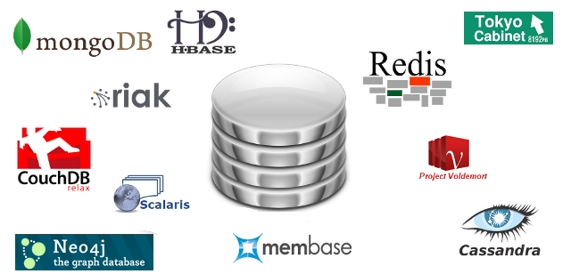

Bancos NoSQL(){
i++
Por: Caroline Barcelos Gonçalves
A grande maioria dos dados gerados atualmente estão de forma não estruturada, ou seja, não tem uma estrutura definida, são áudios, vídeos, dados de sensores, dados de redes sociais, imagens, etc, e representam mais de 85% que as empresas lidam e portanto precisam ser armazenados. Os bancos de dados mais adequados ao armazenamento dessas informações são conhecidos como NOSQL, que significa Not Only SQL (não apenas SQL), porque são mais flexíveis que os tradicionais bancos relacionais.
O que são esses bancos NOSQL? Quais sua vantagens sobre os relacionais?É muito importante que as aplicações que trabalham com Big Data sejam capazes de crescer, e para isso podemos utilizar duas estratégias:
- Escalabilidade vertical: é aquela em que se aumenta a capacidade do hardware
- Escalabilidade horizontal: é aquela em há distribuição de armazenamento e/ou processamento (aumenta-se a quantidade de máquinas)
Alguns exemplos de bancos de dados do tipo NOSQL são o Cassandra, o MongoDB e o CouchDB. Existe ainda o Hadoop, uma ferramenta muito utilizada quando se trata de big data (confira a matéria completa sobre o Headoop na seção Software Livre).
Os bancos de dados relacionais normalmente se baseiam em quatro propriedades, que são conhecidas como ACID (atomicidade, consistência, isolamento e durabilidade), e estas podem ser muito restritivas para soluções de Big Data. Assim como os bancos de dados relacionais se baseiam no ACID, os bancos NOSQL seguem o BASE, que significa em inglês: Basically Available, Soft state, Eventual consistency, ou seja, Basicamente Disponível, Estado Leve, Eventualmente consistente. O que isso significa?
- Basicamente Disponível: se refere ao fato do sistema funcionar basicamente o tempo todo.
- Estado Leve: o sistema não precisa ser consistente todo o tempo.
- Eventualmente Consistente, o sistema torna-se consistente no momento devido.

Alguns banco NoSQL
[Devmedia]Referências:
Bancos de Dados NoSQL x SGBDs
Relacionais: Análise Comparativa
Introdução ao Conceito de Big Data
O que é Big Data?
NoSQL BASE vs ACID Teorema CAP
}